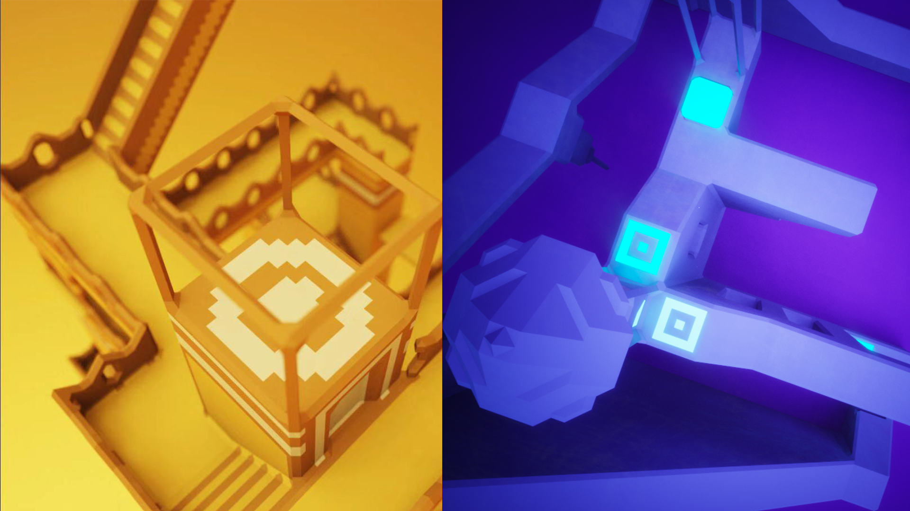

Monument Valley in 3D
As the name implies, Monument Valley in 3D was inspired by the 2-D mobile game Monument Valley.
In this game, two players in the same virtual room need to collaborate with one another to crack the obstacles and get to the destination.
The game was initially designed to play with google VR goggles. The perspective in the demo video was from the uers' computer screen for greater clarity.
Collaborated with Jerry Wang.